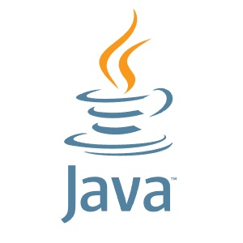
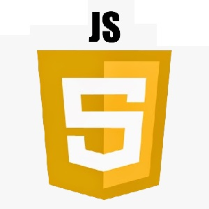
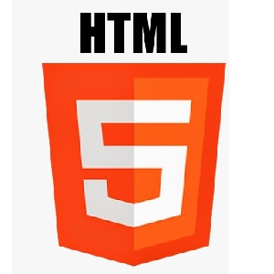
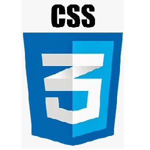
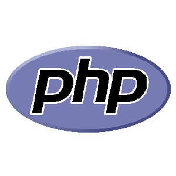
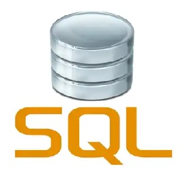
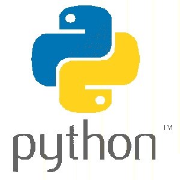
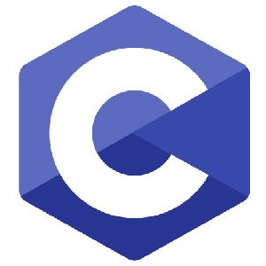
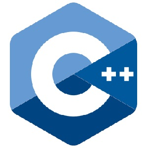
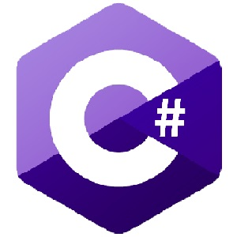

Podstawy programowania
Wprowadzenie
Programowanie to proces tworzenia programów komputerowych, czyli zestawów instrukcji określających, jakie działania ma wykonać komputer. Instrukcje muszą być napisane w odpowiednim języku programowania, a każdy język programowania tworzony jest z myślą o innym zastosowaniu.
- aplikacje desktopowe - programy działające na komputerach stacjonarnych i laptopach
- aplikacje mobilne - programy działające na smartfonach i tabletach
- systemy operacyjne - zestawy programów i narzędzi do podstawowej obsługi urządzeń
- strony/aplikacje internetowe - programy działające na serwerach
- gry, edytory dzwięku, grafiki, tekstu, komunikatory i wiele więcej...
Kod źródłowy
Pierwszym etapem tworzenia programu jest napisanie kodu źródłowego. Jest on zrozumiały dla człowieka, zakładając, że zna on składnię języka, w którym kod jest napisany. Języki programowania można wstępnie podzielić na dwie grupy:
-
Wysokopoziomowe - bardziej czytelne dla człowieka, mniej powiązane z architekturą konkretnego procesora.
Zawierają wiele abstrakcji, a programista nie musi bezpośrednio zarządzać pamięcią i rejestrami procesora.
-
Niskopoziomowe - mniej czytelne dla człowieka, bardzo związane z architekturą danego procesora.
Takie języki pozwalają programiście na bezpośrednie, zoptymalizowane zarządzanie sprzętem, pamięcią i rejestrami procesora, sterownikami oraz bibliotekami systemowymi.
Przykładowy kod źródłowy języka Java (wysokopoziomowy):
Powyższy program pobiera od użytkownika imię oraz wiek, a następnie wyświetla te dane i dodatkowo informację o pełnoletności użytkownika. Nie martw się, jeżeli nic z tego na razie nie rozumiesz. Na tym etapie nie jest to konieczne. Jednak mimo braku znajomości języka Java można odczytać coś z tego kodu i domyślać się co się mniej więcej tutaj dzieje. Podobny kod źródłowy zapisany w języku Assembler x86 (niskopoziomowy):
Kod maszynowy
Aby program można było uruchomić musi on być przekształcony z kodu źródłowego na kod maszynowy.
Kod maszynowy wygląda inaczej dla każdego urządzenia i procesora, a dla ludzi jest bardzo trudny lub niemożliwy do zrozumienia.
Taki kod wygląda mniej wiecej tak:
Uruchamianie programu
Kod źródłowy można przetłumaczyć na maszynowy na kilka sposobów, ponieważ sam sposób przekształcenia decyduje juz o pracy programu.
- Kompilacja - Kompilator tłumaczy plik z kodem źródłowym na plik z kodem maszynowym. Odbywa się to tylko raz przy pierwszym uruchomieniu programu. Kolejne uruchomienia to odczytanie zapisanego kodu maszynowego i odbywa się to szybciej. Dodatkowo w trakcie kompilacji kod jest optymalizowany. Kompilacja do kodu maszynowego jest specyficzna dla danej architektury sprzętowej i systemu operacyjnego. Oznacza to, że kod skompilowany na jednej platformie może nie działać na innej platformie bez ponownej kompilacji dla tej konkretnej platformy.
- Interpretacja - Interpreter linia po linii przetwarza kod źródłowy na maszynowy i uruchamia w czasie rzeczywistym. Kod jest interpretowany przy każdym uruchomieniu i może stosować pewne formy optymalizacji, choć zazwyczaj są one mniej zaawansowane niż w przypadku kompilacji. Interpreter musi być dostępny na każdej platformie, na której chcemy uruchomić nasz kod.
- Transpilacja - Jest to proces tłumaczenia kodu z jednego języka programowania na inny. Transpilacja często ma na celu przetłumaczenie kodu z nowszego języka na starszy, który jest lepiej obsługiwany przez środowiska uruchomieniowe. Przykładem może być transpilacja kodu TypeScript na JavaScript. W przypadku większości transpilacji kod wynikowy jest następnie interpretowany lub wykonany na platformie docelowej.
- Maszyna wirtualna - Kod jest kompilowany do kodu pośredniego, a następnie, maszyna wirtualna uruchamia go w odpowiedni sposób dla danego środowiska. Jest to program, który symuluje środowisko sprzętowe i umożliwia uruchamianie aplikacji w izolowanym i kontrolowanym środowisku. Maszyny wirtualne zapewniają wieloplatformowość, czyli pozwalają na przenośność kodu między różnymi systemami operacyjnymi i środowiskami.
Paradygmaty programowania
-
Programowanie obiektowe - opiera się na definiowaniu obiektów, które zawierają stan i zachowanie oraz komunikują się ze sobą za pomocą metod.
Dobrym przykładem obiektu może być "samochód":
stan: poziom paliwa, prędkość, ilość osób w pojeździe, włączone światła, temperatura silnika itp.
zachowanie: przyspieszanie, hamowanie, zmiana kierunku jazdy, otwieranie okien, włączanie klimatyzacji, itp. -
Programowanie proceduralne - opiera się na sekwencyjnym wykonywaniu instrukcji, które zmieniają stan danych w programie.
W językach proceduralnych zwykle korzysta się z prostych typów danych, takich jak liczby całkowite czy znaki.
W przeciwieństwie do języków obiektowych, języki proceduralne nie pozwalają na definiowanie obiektów.
Dane i funkcje se oddzielone od siebie. -
Programowanie funkcyjne - W powyższym pszykładzie programowania obiektowego "samochód" posiada "funkcje" określone jako zachowanie,
ale w programowaniu fukncyjnym funkcje nie mają stanu wewnętrznego i nie zmieniają stanu programu.
Są one bardziej wykorzystywane, ponieważ mogą być przekazywane jako argumenty do innych funkcji, zwracane jako wartości, a także przechowywane w zmiennych. - Programowanie logiczne - opiera się na opisaniu problemu w postaci reguł logiki, a następnie rozwiązaniu go poprzez wnioskowanie.
- Programowanie zdarzeniowe - opiera się na reagowaniu na zdarzenia, takie jak naciśnięcie przycisku myszy lub wpisanie tekstu w pole tekstowe.
- Programowanie aspektowe - opiera się na separacji pewnych funkcjonalności, takich jak logowanie, transakcje czy bezpieczeństwo, od reszty programu poprzez ich traktowanie jako osobnych aspektów.
Języki programowania
-

Java - ogólnego przeznaczenia język programowania, który jest powszechnie stosowany do tworzenia aplikacji internetowych, mobilnych i desktopowych.
Java działa na Wirtualnej Maszynie Javy (JVM), co oznacza, że programy napisane w Javie mogą działać na różnych platformach.
Język głównie obiektowy, a w mniejszym stopniu proceduralny, funkcyjny i zdarzeniowy. -

JavaScript - skryptowy język programowania, który jest stosowany do tworzenia dynamicznych i interaktywnych aplikacji internetowych.
JavaScript oferuje wiele funkcji, które ułatwiają interakcję użytkownika z aplikacją, takie jak zdarzenia, animacje czy zmiana treści na stronie.
-  HTML - (HyperText Markup Language) to język programowania stosowany do tworzenia stron internetowych. Jest to język oparty na znacznikach, co oznacza, że strona internetowa jest tworzona poprzez dodawanie różnych znaczników do tekstu, które opisują jego strukturę i treść.
-  CSS - (Cascading Style Sheets) to język stosowany do definiowania stylów dla stron internetowych i innych dokumentów HTML. CSS umożliwia programistom kontrolowanie prezentacji dokumentów HTML, w tym kolorów, układu, fontów, marginesów, wyrównania i wielu innych aspektów.
-

PHP - (Hypertext Preprocessor) jest używany przede wszystkim do tworzenia stron internetowych i aplikacji webowych,
umożliwiając generowanie dynamicznych treści, manipulowanie danymi z formularzy,
tworzenie sesji użytkowników oraz interakcję z bazami danych.
Jest to język typowo serwerowy, co oznacza, że skrypty PHP są wykonywane po stronie serwera. -  SQL - (Structured Query Language) to język zapytań do baz danych. Słuzy do zarządzania bazami danych, w tym tworzenia, modyfikowania i usuwania tabel oraz wprowadzania, modyfikowania i usuwania danych. Umożliwia również wykonywanie złożonych zapytań, filtrowanie i sortowanie danych, łączenie tabel oraz agregowanie i grupowanie wyników zapytań.
-  Python - Python jest wykorzystywany w wielu dziedzinach, w tym w analizie danych, sztucznej inteligencji, automatyce, tworzeniu gier i programowaniu webowym. Język ten charakteryzuje się również ogromną liczbą bibliotek, które ułatwiają pracę programistów i przyspieszają proces tworzenia oprogramowania. Kod pisany w języku Python jest interpretowany (jest przetwarzany bezpośrednio przez interpreter, który czyta kod linia po linii i natychmiast wykonuje instrukcje).
-  C - jest często używany do programowania systemów operacyjnych, sterowników i innych aplikacji krytycznych dla wydajności i niezawodności, ale także jest stosowany w aplikacjach ogólnego przeznaczenia, takich jak gry, programy multimedialne i narzędzia programistyczne.
-  C++ - jest językiem programowania, który wywodzi się z języka C. Jest to język ogólnego przeznaczenia, który znalazł zastosowanie w różnych dziedzinach, w tym w programowaniu systemów operacyjnych, tworzeniu gier, a także w aplikacjach biurowych i sieciowych.
-  C# - również wywodzi się z języka C, jest stworzony przez Microsoft, który jest często stosowany do tworzenia aplikacji Windows i gier komputerowych. C# jest językiem ogólnego przeznaczenia, który działa na platformie .NET.